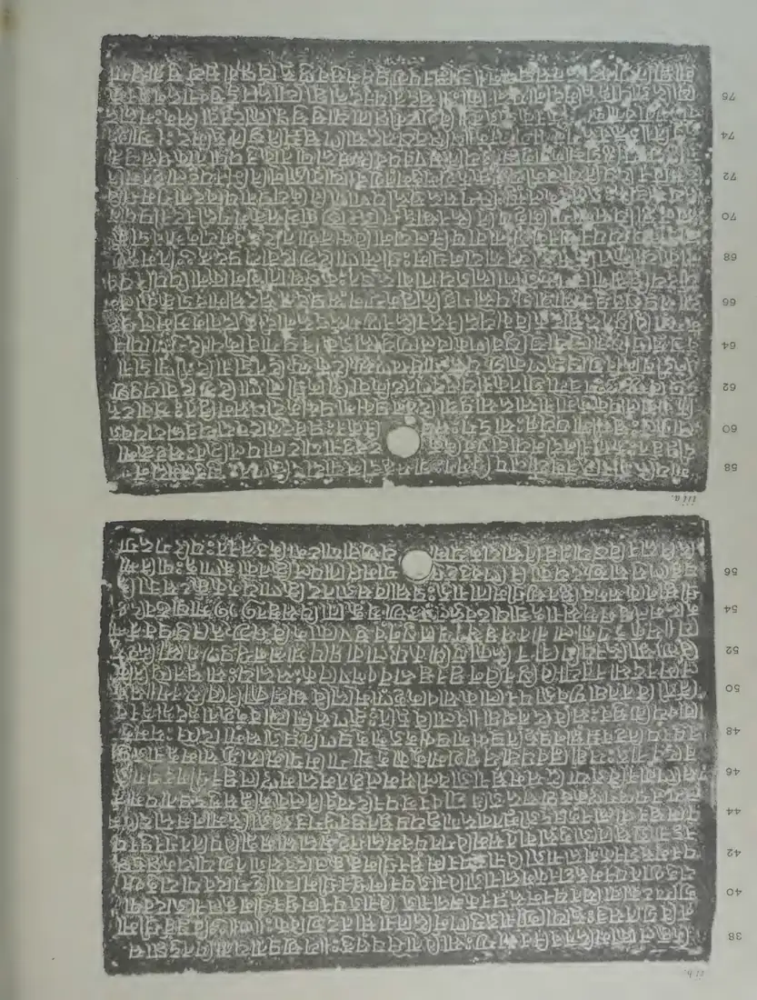
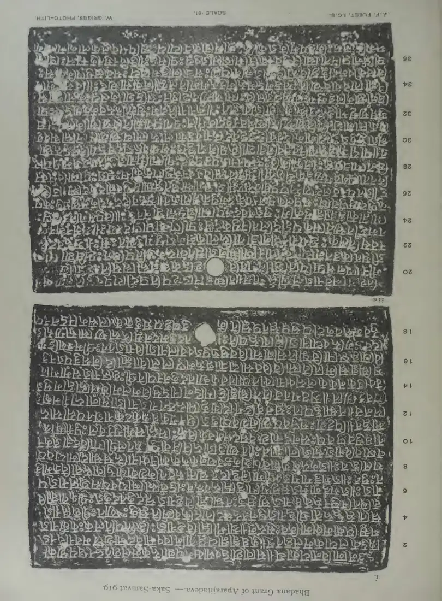

Bhâdâna grant of Aparâjita ; Śaka-Saṁvat 919
BHADANA GRANT OF APARAJITA;
SAKA-SAMVAT 919.
These plates are said9 to have been found, in 1881, with the headman of 'Bhere,' a village about ten miles north of Bhiwaṇdi, the chief town of the Bhiwaṇdi tâlukâ of the Thâṇa district of the Bombay Presidency. I edit the inscription which they contain from excellent impressions, prepared by Dr. Fleet, to whom the original plates were lent by their present owner, Colonel A. F. Dobbs, late Madras Staff Corps.
These are three copper-plates, the second and third of which are engraved on both sides, while the first is so on one side only. Each plate measures about 10 broad by 7 high. Their edges were fashioned thicker, so as to serve as rims to protect the writing; and, with the exception of a few short passages on the first sides of the second and third plates, the inscription
1 This word, tattim, and the word tatti in the next line are quite clear in the rubbings, and cannot be read in any other way. The two previous editions of the text have tatrim in this line, and tatri or tatra in the next.
2 Metre of this verse and of the two next verses: Šlôka (Anushṭubh).
3 Read narakê.
4 Metre: Vasantatilakâ. The construction in this verse is grammatically incorrect.
5 Metre: Šlôka (Anushṭubh).
6 This word, instead of which the two published versions of the text have dêvo, is quite clear in the rubbings.
7 Instead of ŵdhôjagatyâm, which is quite clear in the rubbings, the published texts have râjadhânyâm.
8 Read gônîm.
9 See the Bombay Gazetteer, Vol. XIV. p. 50.
really is in a state of excellent preservation. The plates are held together by a circular ring, about " thick and 24" in diameter, which had not been cut when this record came into Dr. Fleet's hands. The ends of the ring are socketed in a seal, of which the surface is circular, about " in diameter. This seal has, in high relief on a countersunk surface, a representation of Garuđa, with the body of a man and the face of a bird, squatting full-front, with the hands clasped on the breast. The weight of the three plates is 224 tolas, and of the ring and seal, 32 tolas; total, 256 tolas.— The engraving is bold and good. The plates being substantial, the letters, though fairly deep, do not shew through on the reverse sides at all; the interiors of some of them shew marks of the working of the engraver's tool.— The size of the letters is about ". The characters are Nâgarî, and the language is Sanskrit. Up to nearly the end of line 39 the inscription, after the introductory ôm ôm namô Vinâyakâya, has 24 verses, chiefly containing genealogical matter. The rest, being the formal part of the grant, is in prose, but includes, in lines 49-50 and 74-82, a well-known verse on the vanity of this life and seven of the ordinary benedictive and imprecatory verses. As may be seen from the occasional omission of single aksharas and groups of aksharas (e.g. in lines 38 and 54) and from the frequent occurrence of wrong letters, the writer has done his work in a rather slovenly manner. As regards orthography, the letter b is throughout denoted by the sign for v; the dental sibilant is frequently used for the palatal, and the palatal three times for the dental (in âsîd, l. 3, šakala, l. 37, and šamvatsara, l. 54); and the dental nasal is employed instead of the guttural in the words anka, ll. 5, 32, 54 and 89, and Konkaṇa, l. 56, and instead of the palatal in kânchanam, l. 78. In respect of the language, it may be noted that the text in line 45 offers two birudas, Malagalaganda, 'a conqueror of mountains (?),' and Nannisamudru, 'a sea of truth,' which are not Sanskrit, and that it also contains some proper names with Kanarese endings, in lines 64 and 85-86. The word dramma, abbreviated to dra, which occurs in lines 88-89, is often met with in cognate inscriptions.
The inscription is one of the Šilâra1 Mahâmandalésvara Aparâjitadêva. It clearly divides itself into two parts. The first part, up to line 39, gives the genealogy of Aparâjita himself and of the Raṭta (or Râshṭrakûṭa) kings, to whom the earlier Šilâra chiefs owed allegiance;2 and the second part records the grant of the village of Bhâdâna, made by Aparâjita in Šaka-Samvat 919 in favour of (the temple of) the god (Sûrya under the name) Lônâditya, at Lavaṇêtaṭa.
Opening with the words 'ôm, ôm, adoration to Vinâyaka,' the inscription first has two verses (one of which is well known to us from Râshṭrakûṭa inscriptions) invoking the protection of the gods Vishnu, Šiva, and Brahman. It then gives, in verses 3-12, the following complete list of the seventeen Râshṭrakûṭa kings from Gôvinda I. to Kakkala:3— 1, Gôvindarâja; 2, Karkarâja; 3, Indrarâja; 4, his son Dantivarman; 5, Karkarâja's son Kṛishnarâja; 6, Gôvindarâja; 7, his younger brother Dhruva; 8, his son Jagattunga; 9, Durlabha Amôghavarsha; 10, his son Kṛishnarâja; 11, Jagattunga's son Indradêva Nityamvarsha;4 12, his son Amôghavarsha, who is said to have ruled for one year; 13, his younger brother
1 On the three branches of the Šilâra or Silâra or Šilâhâra family see Dr. Bhagvanlal Indraji in Journ. Bo. As. Soc. Vol. XIII. pp. 10-17. On the particular branch of the family to which Aparâjita belonged, which ruled over the Northern Koñkan, compare the Bombay Gazetteer, Vol. XIII. p. 422 ff., and the inscriptions in the Asiatic Researches, Vol. I. p. 357 ff., and Ind. Ant. Vol. V. p. 276 ff.; Vol. IX. p. 33 ff.; and Vol. XIII. p. 133 ff.
2 The inscription in this respect is like the Khârêpâṭan copper-plate inscription of the Šilâra Maṇdalika Raṭtarâja of Šaka-Samvat 930.
3 Compare Dr. Fleet's Dynasties of the Kanarese Districts, p. 31 ff.; Dr. Bhandarkar's Early History of the Dekkan, p. 47 ff.; and especially Dr. Bhandarkar in the Journ. Bo. As. Soc. Vol. XVIII. p. 240 ff.
4 So the name is written both in line 7 and in line 11. The Jagattunga, of whom Indradêva Nityamvarsha and Vaddigadêva (No. 14) were sons, was a son of Kṛishnarâja (No. 10); he did not rule himself. In the Khârêpâṭan plates also Indrarâja is mentioned immediately after Akâlavarsha (our Kṛishnarâja, No. 10), and is described as his grandson (naptâ).
Gôvindarája Suvarṇavarsha; 14, his paternal uncle, the (son of Jagattuṅga and) younger brother of Nityainvarsha, Vaddigadėva; 15, Kṛishnarája; 16, Khoṭtigadėva; and 17, Kakkala, a son of a prince Nirupama. It will be seen that this list agrees with the account given in Dr. Bhandarkar's Early History of the Dekkan, p. 57, as amended by the same scholar in the Journ. Bo. As. Soc. Vol. XVIII. p. 240 ff.; and the only points new to us are the name Durlabha for the first Amôghavarsha (No. 9), and the remark that the second Amôghavarsha (No. 12) ruled for one year only.1— This account of the Râshṭrakúṭas, in verse 13, closes with the statement that (when the grant here recorded was made) the last king Kakkala had been overthrown by (the Western Châlukya) Tailappa, as a light is extinguished by a fierce wind, and that of the once flourishing Raṭta rule there remained only the memory.
Verses 14-24 then give the following genealogy of Aparájita himself, already known to us from other inscriptions: the mythical beings Jimûtakêtu and his son Jimûtavâhana, 'the ornament of the Šilâra family;' Kapardin; Pulašakti; his son Kapardin; Vappuvanna;2 his son Jhañjha; his brother Goggirája; his son Vajjađadėva; and his son Aparájita. What is new here, is, that Aparájita, according to verse 20, also bore the name Mṛigâńka.3
After these verses, the proper object of the inscription is stated in prose, in lines 39-66:— 'After the down-fall of the Raṭta rule,4 consequent on the extinction of the Paramabhaṭṭaraka Mahârájádhirája Puramêsvara, the glorious Kakkaladėva, who had meditated on the feet of the P. M. P., the glorious Khoṭtigadėva, who in turn had meditated on the feet of the P. M. P., the glorious Kṛishnarájadėva, (kings) who formerly resided at the famous Mânyakhêṭaka,— the Mahâsâmuntâdhipati Mahâmaṇdalêsvara, the glorious Aparâjitadėvarája, who by virtue of his might has attained the pañchamahâśabda, and is adorned with such titles as "the supreme lord of Tagarapura, the Šilâra prince, he who is begotten in the lineage of Jimûtavâhana, who has a golden Garuđa in his ensign, a great ocean of pride, a conqueror of mountains (?),5 a god of love among heroes,6 the possessor of innate knowledge,7 the frontal ornament of the Western Region, a sea of truth, a sun of fierce splendour, Šanivâravijaya,"8 etc., . . . informs all persons as they may be concerned, the future occupants of the village (to be mentioned below), feudatories, rájaputras and heads of towns, and the chief and common people of the three (principal) castes, places of abode (sthâna), etc., that, . . . when the years from the time of the Šaka king were nine hundred and nineteen, on the fourth lunar day of the dark half of Âshâđha of the current year Hêmalamba, and when he, the glorious king (rájan), happened to be staying at the famous Sthânaka, he, on the auspicious occasion of the Dakshinâyana,— (i.e. the) Karkaṭa-samkrânti,— having poured water into the
1 Besides, verse 11 may possibly contain an allusion to the imprisonment of Kṛishnarája (No. 15) by one of his adversaries; see page 272 below, note 6.
2 It may be noticed that, by the strict wording of verse 17, the name Vappuvanna, which occurs in that verse, ought to be taken as another name of the second Kapardin, spoken of in verse 16. But the other inscriptions distinctly call Vappuvanna the son of the younger Kapardin.
3 It seems impossible to take the word mṛigâńkaḥ in verse 20 in any other sense.
4 As this event had taken place twenty-four years before the present grant was issued, the manner in which the formal part of the inscription commences shews, how long certain forms of speech when they have once become customary may be retained, even after the occasion for them has ceased to exist. The later known inscriptions of the Šilâra family contain no reference to the Râshṭrakúṭas.
5 With malagala-gaṇda compare malaparoḥ-gaṇda, 'the hero among the hill-chiefs'; Ind. Ant. Vol. XX. p. 304, note 8.— [Perhaps malagala is meant for malegaḥa, gen. plur. of male, 'a hill.'— E. H.]
6 With gaṇda-Kandarpa compare, e.g., Raṭta-Kandarpa, ib. Vol. XII. p. 256, and gaṇda-Mahêndra, ib. Vol. XX. p. 269.
7 Sahaja-Vidyâdhara may also mean 'by nature a Vidyâdhara;' compare sahaja-Makaradhvaja, ib. Vol. XIX. p. 247, l. 90.
8 With this title, for which I cannot offer any suitable explanation, compare Šanivâra-siddhi, page 208 above, note 5.— [The two birudas might mean 'one who is victorious' and 'one who is successful (even) on (an unlucky day like) Saturday.' Compare the curious surname Nidrdrasâna-vijayin, page 71 above, note 1.— E. H.].
hands of the superintending people of the town of Guṇapura (?), the merchants Ambû-śrēshthin and Vāppaiya-śrēshthin, the priest (bhójaka) Chélappaiyu, the Bráhmaṇa Góvanaiya, and others, and having worshipped with pure faith Hari (Vishṇu), Hara (Śiva), Hiranyagarbha (Brahman), Agni, and other gods,— gave the village of Bhádána, in the Máhirihára vishaya of Koñkaṇa which contains 1,400 villages, . . . to (the temple of) the illuminator of the three worlds, the holy god Lônāditya at Lavaṇētaṭa, for the purpose of providing flowers, perfumes, lights, offerings of eatables, public shows, etc., and for keeping the doors and other parts (of the temple) in proper repair.'
The village of Bhádána, so granted, (according to lines 57-62) was bounded on the north by a bhinnára (?) field of the village of Padigaha, on the west by (the village of) Āsachchhadi, on the south by the great river Murula, and on the east by the river Kumbhári; and was given with its rows of trees, up to its proper boundaries, with the udraṇga and parikara,1 with the exception of what had been previously given to gods and Bráhmaṇas, but together with (the fines imposed for the commission of) certain great and lesser offences,2 and with the privilege that it was not to be entered by the irregular or regular troops.
Lines 66-82 contain the usual injunction to preserve this grant intact, threaten with spiritual punishment those who might interfere with its provisions, and quote seven of the ordinary benedictive and imprecatory verses. The inscription then (in line 82) continues thus:— 'In confirmation of the above, the Mahámaṇdalévara, the glorious Aparájitadévarája, has it put down (here) by the writer's hand that this is his decree, (in the words) "such is my decree, that of the glorious Aparájitadévarája," (issued) while by the glorious king's3 appointment the illustrious Saṅgalaiya is Mahámátya4 and the illustrious Síhappaiya Mahásándhivigrahika.5 This charter6 has been written at the direction of Saṅgalaiya (?) by his son and deputy Annappaiya. It is deposited at Sthânaka. Everything without exception that is written here, be it right or wrong, should be regarded as authoritative.'
Lines 87-89 then record an additional settlement by which the town (it is not clear which town7) was to give every year 260 drammas, I do not understand for what exact purpose. And the inscription ends with the words 'bliss, great fortune.'
The date of this inscription is not quite regular. In Śaka-Samvat 919 expired, which by the southern luni-solar system was the Jovian year Hémalamba, the Dakshináyana (Karkaṭa) Saṅkrânti took place 22 h. 13 m. after mean sunrise of the 24th June, A.D. 997, during the second tithi of the dark half of the amánta Āsháḍha; and the fourth tithi of the dark half of the same Āsháḍha commenced 0 h. 43 m. and ended 21h. 52 m. after mean sunrise of the 26th June, A.D. 997. Judging by a large number of other dates, any rite specially connected with the Saṅkrânti should in this case have been performed on the 25th June, and this day should have been described in the text as the second of the dark half, both because the second tithi ended on it, 3 h. 7 m. after mean sunrise, and because the Saṅkrânti took place during that tithi. As no week-day is given, it is impossible to say whether the 25th or the 26th June, A.D. 997, is the exact day of the grant.
1 This word is used here as elsewhere for the more common uparikara; compare, e.g., page 109 above, note 7.
2 The first half of line 61 of the text I do not fully understand; kumári-sáhasa (if this be the correct reading) would of course be 'violence offered to a girl.'
3 The term of the original (in line 84) is śrīvi(bi)rudaka-rája, 'the king who has śrī as his biruda.' Compare the expression śrīvirudámka (?), used with reference to Aparájita in As. Res. Vol. I. p. 357, last line of the lithograph, and Ind. Ant. Vol. IX. p. 34, l. 33.
4 i.e. 'great minister.'
5 i.e. 'great minister for peace and war;' a Síhappaiya is mentioned as minister for peace and war in the Bháṇdup grant of Chhittarájadéva of Śaka-Samvat 948, Ind. Ant. Vol. V. p. 278.
6 i.e. the original of it, of which the copper-plates furnish a copy.
7 In all probability it was Guṇapura.
Of the localities and rivers mentioned in the inscription, Bhâdâna-grâma clearly is the village of 'Bhadanah' or 'Badana' of the maps, about nine miles east by north from Bhiwanđi. Two miles north of it is the village of 'Padgha' or 'Padghe' or 'Padgheh,' the Pađigaha-grâma of the grant; and east of it is a small river, the 'Kumbari' or 'Kombaree,' the Kumbhârî of the inscription. This river flows into the Ulhâs, which, flowing generally from north-east to south-west, might fairly be called the southern boundary of Bhâdâna, and is no doubt the great river Murula of the grant. The maps do not shew anything corresponding to the ancient village of Âsachchhadî, which was on the west of Bhâdâna.— Lavanétata is the modern village of Lônâd, six miles south-east of Bhiwanđi and half a mile north of the Ulhâs river, a place where there are many ruins of ancient temples;1 and Sthânaka or Śrî-Sthânaka of course is the town of Thâna. The town of Guṇapura (?) and the place from which the Mâhiri-hâra vishaya was called, I am unable to identify.
TEXT.2
First Plate.
1 Ôm3 [||*] Ôm namô Vinâyakâya || Sa4 vô=vyâd=Vêdhasâ dhâ[ma] yan-nâbhi-kamalam kritam [|*] Harasé=cha yasya kâ-
2 nt-êndu-kalayâ kam=alam kritam || [1*] Kurvvantv=âmnâya-pûtâni Vêdhasô vadanâny=alama(m) [|*] charâchara-ja-
3 gat-spishî-nâma-dhâmâni vah su(sû)bham || [2*] 5Âsî(sî)d=Gôvindarâjah kshitipa[ti*]-tilakah Karkkarâja-
4 s=tatô=bhûd=bhû-bharttâ śr-Îndrarâja[h*] punar=abha[va]d=atô Dantivarm=êti sûnuh [|*] khyâtah śrî-Krishnarâja[h*]
5 kshapita-ripur=abhût=Karkkarâjasya sûnuh6 tasmâd=Gôvindarâjas=tad=anu tad-anujah śrî-Dhruv-ânkô(ñkô)=dhi-
6 râjah || [3*] 7Jagattuungâ(gô)=îngajas=tasya gugôttudgô8=bhavat=tatah | Durlabhô=môghavarshasa(ś=cha) Krishnarâjapa(s=ta)-
7 tah sutah || [4*] Jagattung-âîngajah śrîmân=Indradêvas=tatô=bhavat [|*] Nityamvarshô9 bhuvô bharttâ vikram-ôtum(tturi)-
8 ga-lakshitah || [5*] 10Jana-harsha-kritê varshan=ghana iva ghana-kanaka-vâri-dhârâbhis=11tasmâd=Amôghavarshô
9 varsh-âvadhi râjya-bhâjanô jâtah || [6*] 12Tasy=ânujô Harir=iv=ô[ddh?]u[ra?]-bhûtala-śrîr=Gôvindarâja-nara-
10 nâtha-Suvarṇnavarshah [|*] sa[n-*]na[m]dakâ(kô)=chyuva(ta)-sudarśana-chakra-chihnah si[m]hâsanî guru-va(ba)lah purushôtta-
11 mô=bhût || [7*] Pitṛivyah13 Svarṇnavarshasya Nityamvarsh-ânujaś=chiram [|*] kurvann=akamîtaka[m] râjyam tapasâ sâha-
12 sêna cha || [8*] Tasmâd=bhûpatêh14 sûnur=Vaddigadêvô nripô=bhavat [|*] Râjarâjô su(ma)nôhârî Manmathô=
1 See the Bombay Gazetteer, Vol. XIV. p. 211 ff.
2 From impressions prepared by Dr. Fleet.
3 Expressed by a symbol.
4 Metre: Šlôka (Anushṭubh); and of the next verse.
5 Metre: Sragdharâ.
6 Read sûnus=ta°.
7 Metre: Šlôka (Anushṭubh); and of the next verse.
8 Read guṇ-ôttuung6.
9 So this name is clearly written both here and below.
10 Metre: Gîti.
11 Read -dhârâbhih |.
12 Metre: Vasantatilakâ.
13 Metre: Šlôka (Anushṭubh); and of the next verse.
14 The reading is quite clear here in the original, but there must be something wrong in the text. Instead of tasmâd=bhâpatêh one would have expected Jagattuungasya. The Khârêpâṭan plates in line 13 also describe Vaddiga as Jagattuunga-tanayah.
13 pi cha driśyatê || [9*] Atha1 gatavati tasmin=Vaddigê[m*]drê narôdra2
suvimalam=api Šambhôr=dvâ(ddhâ)ma suja3
14 vidhâtum[*] kanaka-kalasa-dhârâ-dhanta-pât=êva4 kanyâ tad=anu narapati-śrîh
Křishṇarâjam samâgât || [10*]
15 5Asminn=astamitê visau(bhau) vidhi-vasâ(sâ)d=âkrânta-bhûmaṇdalê lôk-âhlâdini
sa(ša)ttru-painjara-ru-
16 dhi6 shrô(prô)tkřishta-rôchishmati[*] sîtâsâv=7iva su(šu)bhra-pu[m*]ja-dhavalê
râjâdhirâjê tatah śrîmat-Khoṭti[ga]-
17 dêva ity=abhidhayâ râjya-sthitô bhûpatih || [11*] 8Tad=anu Madana-mûrtti[m*]
bhâgya-sô(sau)bhâgya-bhâja[m]
18 bhuvana-bhavana-dîpam suprasûta-prasûti[m[*]] Nirupa[ma*]-nṛipa-sûnum
Kakkalêsam(šam) narêmdram narapa-
Second Plate; First Side.
19 ti-kṛita-sêvam râja-lakshmîr=jjagâma || [12*] 9Tasmin=narêmdrê nṛipati-pradîyê(pê)
prachaṇda-T[ai]lappa-[sa]-
20 mîraṇêna saimprâpitê=jyôti[r=alam?]10 vivṛiddhê ka[th-âva]bhâsê11 sati Raṭta-
râjyê || @ || [13*]
21 12Jimûtakêtu-tanayô[s]vatatâra yô=smin13 Jimûtavâhana iti prathitah prithivyâm
[*] Ši[lâ]-
22 ra-vaṁsa(ša)-tilakah sva-śarîra-dânât=trâtâ hi lôkam=anaghaś=cha Garutmatah
sah14 || [14*] 15Abhavad=a[hi]-
23 ta-marddî tasya vaṁsê(sê) Kaparddi dalita-ripu-kadamva(mba)h prâninâm prâna-
dah sah ||(l) samara-saraṇa(ni)-
24 gôptâ kâmû(?nta)-kântâsu Kâmah sujana-vadanapadm-ônnidra-bhâsvân=atam[dra]h
|| [15*] Vipula-mati[r=udî]rmṇah
25 Karṇpavat=svarṇna-varshaih sapulaka-Pulaśaktir=ddharma-yuktas=tatô=bhût || (l)
abhavad=iha na dînas=tasya sûnuh Kapa-
26 rddî jîta-para-va(ba)la-daṇ-âkhaṇda-prîthvî-taraṇdah || [16*] 16Jhamjha-nâmâ
sutas=tasmâd=Va[ppu]vannâd17=abhûd=asau ||(l) udi[tô]-
27 ditatâ yêna vaṁsasya prakatîkrîtâ || [17*] Bhrâtâ18 tatô vivu(bu)dha-ratna-
guṇ-aika-kôšah pûjyah payôdhir=iva ra-
28 kshita-gôtra-pakshah[lakshmî-nidhih Sagararâja-patha-pravṛittah] śrî-Goggirâja
iti sa[t*]tva-samâśrayô=bhû-
29 t || [18*] 19Pâd-âkrânta-kṛi(mṛi?)t-âri-vargga-vanitâ-vyâkshipta-nidrâ-sukhah sa śrî-
Vajjaṇadêva-bhûpatir=abhût=tasy=â-
1 Metre: Mâlinî.
2 Read narêmdrê.
3 Read šubhram (?).
4 Read -gâtr=êva.
5 Metre: Šârdûlavikrîdita.
6 This reading is quite clear in the original, but I doubt its being correct. In the place of rudhî I should have expected a substantive, expressing that from which Křishṇarâja derived additional splendour. Perhaps we should read ruchi, and assume that Křishṇarâja had been imprisoned by one of his opponents.
7 Read éttâmâdv=.
8 Metre: Mâlinî.
9 Metre: Upajâti.
10 I am very doubtful about the correctness of the two aksharas in these brackets. The first of them is nearly illegible, and the second looks rather like ta or tê.
11 I should have expected here kath-dvaéshê.
12 Metre: Vasantatilakâ.
13 Read =smiñ=J̄°.
14 [These words allude to a legend which is told in the Kathâsaritsâgara, taraṇga xxii., and which forms the subject of the drama Nâgânanda.— E. H.]
15 Metre: Mâlinî; and of the next verse.
16 Metre: Šlôka (Anushṭubh).
17 The second akshara of this name, which I read ppu, might possibly be read tpu.
18 Metre: Vasantatilakâ.— The first word looks in the original rather like sratô.
19 Metre: Šârdûlavikrîdita.
Plate 1 is bound after this page.
Plate 2 is bound after this page.
30 tmajô bhûbhujah ||(l) dân-ânamdita-vandi-vṛinda-vadanair=âva(ba)ddha-kôlâhalô
yasya tyâga-mahôtsava-vṛi(vya)-.
31 [ti]karô n=âdy=âpi vi[śr]âmyati || [19*] 1Anavarata-dâna-śîlah pratâpavân=nîti-
vid=yasô(śô)-nilayah | sû-.
32 nus=tasya Mṛigânka(ñka)h śrîmân=Aparâjitô jâtah || [20*] 2Krûr-ârâti-Yamah
sukîrtti-bhavanam kalpa-dru[ma]h prâ-.
33 rthinâm sthânam nêtra-mu(su)khasya vai(dhai)rya-jaladhih saukhyasya kand-
âmkurah [|*] sad-vidyâ-nilayah kalâ-ma[dhu]-sa-.
34 rin=nîtau cha Vâchaspatih sadva(ddha)rma-druma-bhûmir=uttama-matir=Lakshmî-
nivâs-âsyadah3 || [21*] 4Vis[ṛita]-ma[t]i-.
35 vivêkî5 dharma-tannishṭha-chittî6 vai(vi)[vu(bu)]dha-jana-nishêvyah
sa(śa)ttrunô(mâ)ttr[ê*] savairyah [|*] sakala-guṇa-ni[vâ]sah.
36 prârthinâm pûrit-âsô(śô) ripuvara-kari-si[m]hô râja-dhuryah prasiddhah || [22*]
Ruchira-sutanu-bhâsah(sa-)prô[lla]-.
37 sat-sanni[vê ?]sah(śô) nirupama-nija-kîrttih(tti-)[vy]âpta-lôkatrayô yah [|*] api
śa(sa)kala-kalânâm=â[śra]yô
Second Plate ; Second Side.
38 nikka(shka)lamċô mahita-charita-bhâgyah sâdhit-âsêsha-sa(śa)ttruh || [23*] Yasya6
pratâya(pa)-tâpita-dushṭâ sa 7
39 na vidyatê sa(śa)ttruh [|*] bhûyô(pô)=nyô râja-guṇair=mahitair=âstâm tad-
abhyadhikah || @ || [24*] Iti pûrvvam śrî-Mâ-.
40 nyakhêṭak-âvâsita-paramabhapû(ttâ)raka-mahârâj[â*]dhirâja-pa ra m ê s va ra - ś r î m a t-
Kṛishṇarâjadêva-pâ-.
41 dânudhyâta-paramabhatṭâraka-mahârâjâdhirâja-paramêsvara-śrîmat-Khoṭṭigadêva-pâdânu-
dhyâ[ta*]-.
42 paramabhatṭâraka-mahârâjâdhirâja-paramêsva (śva)ra-śrîmat-Kakkaladêva-samâjâta-vyapâ-
ya-nashṭa-bhrashṭa-.
43 Raṭṭa-râjyê sva-têjô-nubhâvât samadhigatapamchamahâśavda(bda)-mahâsâmant-
âdhipati-Tagarapura-pa-.
44 ramêsva(śva)ra-Śilâra-narêmdra-Jimûtavâhan-ânvayaprasûta-Suvarṇṇaga r u d a d h v a j -
Âbhimânamahôdadhi-Ma-.
45 lagalagaṇḍa-Gaṇḍakamdarppa-Sahajavidhyâdhara-8Aparadigvadhûtilaka-Nannisam u d ra -
Pratâpamârtta-.
46 ṇḍa-Sanivâravijay9-âdi-samastarâjâvalîsamalamkṛita-mahâmaṇḍalêsva (ś v a) r a-ś r î m a d-
Aparâji-.
47 tadêvarâjah sarvvânn=êva10 yathâsamva(mba)dhyamânna(na)kân(n=) âgâmi-grâma-
bhôktṛpi-sâmanta-râjapu-.
48 tra-purapati-tṛi(tri)vargga-sthâna-prabhṛiti-pradhân-âpradhâna-janô(nâ)n praṇati-pûjâ-
samâdai(dê)śaih samanu-.
49 vô(bô)dhayaty11=astu vah samviditam yathâ || Chalâ12 vibhûtih kshaṇa-bhamgi
yauvanam Kṛitânta-dant-ântara-va-.
1 Metre : Âryâ.
2 Metre : Śârdûlavikrîdita.
3 Read -âspadam.
4 Metre : Mâlinî.
5 Read -vivêkô and -chittô. I believe tannishṭha to be used here in the sense of tatpara.
6 Metre : Âryâ.
7 Read -dushṭasya samô (?). 8 Read °dhar-Ápara2.
9 Read -Śani9.
10 Read sarvvân=êva.
11 Originally °yati or °yatyi was engraved, but the sign for î is struck out.
12 Metre : Vamśastha.
50 rtti jívita[m] [*] tath=âpy=avajûâ para-lôka-sâdhanê npiñâm=ahô vismaya-kâri
vê(chê)shtitam || saka-
51 lam=ètad=asâratay=âdhishthitain vinasva(sva)ra-svabhâvain dharma êv=aikah
sahâyah sâ(sâ)sva(sva)tas=ch=ai(ê)ti ki(vi)-
52 chiinty=âsmâbhir=ayain pitrôr=[ai*]hik-âmushmika-phal-âvâptayê(ya) âtmanas=cha
punya-yasô(sô)-bhivriddha-
53 yê ||1 Sa(sâ)kanîpa-kâl-âtita-samvatsara-2sa(sâ)têshu navasu(sv=)
êkônavimûsaty-uttarêshu pravarttamâ-
54 na-Hêmalamva(mba)-samvatsar-3ânta Âshâdha-va(ba)hula-chatusyâm(rthyâm=)
anka(îka)tô=pi samvat4 919 Âshâdha-vadi 4
55 śrî-Sthânakê samavasthitasya śrîmatô râjñaħ prastâvê samjâta-dakshinâyana-
karkkata-sa[m]krânti-
56 parvvani su(shu)bh-âbhyudaya-kârini chaturddasagrâmasat-ôpalakshita-Konka(îka)n-
ântahpâti-Mâ-
57 hirihâra-vishay-ânna(nta)rvva[r*]ti-Bhâdâna-grâmô yasya ch=âghâtanâni(ny=)
uttaratah Padigaha-grâ-
Third Plate; First Side.
58 míya-[bh?]innâra-kshêtra-maryâdâ paschimatah5 Âsachchhadi-maryâdâ dakshinatah6
Murula-mahâna-
59 dî pûrvvatah Kumbhârî-nadî-maryâdâ7 êvam nikata-chatur-âghâtan-ôpalakshitah
savîkshamâ-
60 lâkulah svasîmâ-paryantah sć draingaħ saparikarah pûrvvadatta-dêvadâya-
vra(bra)hmadâya-varja[m*]
61 nidhâ[n]âlîpaka[h] ?]8kumârô(rî)sâhas-âputrâdi[dha?]na-pradhân-âpradhâna-dôsha-saman-
vitah9 achâtabha-
62 tta(ta)pravê[s]yah10 jaga[t*]tray-ô[d*]dyôtakarâya Lavanêtata-nivâsinê śrî-
Lônâdityadêvâya pushpa-
63 [dhû]na(pa)-dîpa-naivêdya-prêkshanak-âdy-upabhôgârthain 11khanda-sphatika-sphutita-
dvâr-âdi-jîrnôdvâ(ddhâ)râ[rtham*]
64 cha12 Amvû(mbû)srê(srê)shthi-Vâppaiyâ(ya)13srê(srê)shthi-vanika(k)-Chêlappaiyubhôjaka-
vipraGôvanaiy-âdi-Gunapaura(?)-14
65 nagar-âdhishthita-hastôdakain vidhâya Hari-Hara-Hiranyagarbha-Dahan-âdîn
dêvân(n=) amala-śra[ddha]-
66 yâ sampûjya cha putra-pautr-âdy-upabhôga-vrittitvêna grâmah sampradattas=
ta[m?] dastamôchaîndr-15ârkka-kâla-ma-
67 ryâdain yasvi(thê?)chchh-âchâ[r]ê[na] bhumjatô bhôjayatô vâ ha(kri)shatah
karshayatô vâ na kên=âpi paripa[ntha]-
1 This sign of punctuation is superfluous.
2 Read -samvatsara-.
3 Read -samvotsar-; one would expect here -samvatsar-ântargat-Âshâdha-.
4 Read samvat.
5 Read °mata.
6 Read °natô.
7 Read °d=aivam; the word maryâdâ (after nadê) appears superfluous.
8 This sign of visarga appears to have been originally omitted and to have been added afterwards. I do not understand the sense of the original text.
9 Read °tô=chô.
10 Read °vêsyô.
11 The word sphatika appears to be entirely out of place here.
12 Read ch=Âmbû.
13 This correction appears to have been made in the original.
14 I am almost certain that the three lines which denote au have been struck out in the original, and believe the intended name to be Guṇapura.
15 Read °ttah | aîn dattam=â-chaîndr-(?).
68 nâ kâryâ ki[m*] tarhi sarvvad=aiva Bhâdâna-grâmah śrî-Lôṇadityadêvâya
pradatta iti mantavya[m]
69 [n]=âtra vishayê parasparam=anyatô vâ parilamnghanâ vidhâtavyâ [||*] Tad=
idam dharma-dânam=â-chamdr-ârkka-
70 kâlam sthâyi samâgâmi-nripatibhir=asmad-vainśajair=anyair=vvâ1 asat-karma-
ga[m]bhîra-darî-prapâta-
71 bhaya-[bh]îrubhih2 jvalad-anala-sphulinga-sahasra-bhîpa(sha)[n]-âvîchi-ni[ra*]ya-
pratâpa-vêdan-âgama-śa[m]vi(ki)-
72 bhi[h*] sarvvair=api pratipâlanîyam [sa ?]tkarttachya(vya)m=anuma[m*]tavya[m]
cha | yô v=âjñâna-timira-patal-âvyita-mati-
73 r=âchchhindyâd=âchchhidyamâna[m] [v]=ânum[ôda]yati sa êva pamchabhir=
mahâpâtakair=upapâtakê(kai)ś=cha samûyktô
74 bhavati || Uktam cha bhagavatâ Vyâs[ê]na || Shashṭim3 varsha-sahasrâpi
svarggê tishṭhati bhûmi-dah | âchchhêtta(ttâ)
75 ch=â[nu]maintâ cha tâny=ê[va] narakam vrajêt || Viindhy-âtavîshv=atôyâsu
su(śu)shka-kôṭara-vâsinah | mabâha-
76 yô hi jâyantê bhûmidân-âpahârakâh || Sva-dattâm para-dattâm=vâ4 yô harêd=
vasundharâ[m] |*] hana(ra)n=naraka-
77 m=âpnôti yâvad-âhûtasamplavam || 5Agnêr=apatyam prathamam suvarṇna[m*]
bhûr=Vaishnavî Sûrya-sutâś=cha gâ-
Third Plate; Second Side.
78 vah [|*] lôka-trayam têna bhavêd=vi(dhi) dattam yah. kâncha(ñcha)nain
gâ[m*] cha mahîm [cha*] dadyât || 6Va(ba)hubhir=vvasudhâ bhu[ktâ] râja-
79 bhih Sagar-âdibhih [|*] yasya yasya yadâ bhûmitta(s=ta)sya tasya tadâ
phalam || 7Sarvvân=êtân=bhâvinah pâ-
80 rthiv-êmdrân bhûyô bhûyô yâchatê Râmabhadrah [|*] sâmânyô=yam8 dharma-
sêtur=nripânâm kâlê kâlê pâ-
81 lanîyô bhavadbhih || 9Mad-vainśajâh para-mahîpati-vainsa(śa)jâ vâ yâ(pâ)yâ(pâ)d=
ayê(pê)ta-manasô bhuvi bhâvi-
82 bhûpâh [|*] yê yâ(pâ)layanti mama dharmam=ida[m*] samastam têshâm=u vâ10
vinihê(hi)tô=[ñja]lir=êsha sû(mû)rddhni || Yathâ ch=ai-
83 tad=êvam tathâ hi mâhâmaṇdalêsvara-śrîmad-Aparâjitadêvarâjô lêkhaka-hastêna
sva-matam=â-
84 rôpayati mata[m*] mama śrîmad-Aparâjitadêvarâjasya |11 śrîvi(bi)rudaka-râja-
niyamât(n=) mahâ-
85 mâtya-śrî-Saṅgalaiyê mahâsânvi(ndhi)vigrahika-śrî-Sîhappaiyê cha sati ||
Saṅgavaiya-sûnunâ12 sa[m]-
86 jât-âbhyanujñêna pratihastaka-Annappaiyêna13 sâ(śâ)sanam=idam likhitam tach=cha
Sthânakê dhruvam ||
87 Yat=kim=api likhitañ yuktam=ayuktañ tad=aśôsham=api pramâpa-bhûtañ
vijñayani1 | Tithâ2 bhûyô=pi
88 vyavasthâ ch=âtra nanvavyâ vasha prativîrsha3 nagarêna râjakulasya
arbhaṇâbhâvyârthain4 prarmmanau5
89 6shashthâ(shtya)dhika-śatadvayam=anka(ñka)tô=pi dra 260 dâtavyâni [||*]
Mañgala[m*] mahâśrît(r)=iti ||
1 Read vijñêyam (?).
2 Read || tathâ.
3 Read mantavyâ yathâ (?) prati-varshañ; the sign of the vowel t of tîrsha is almost certainly struck out in the original.
4 I am unable to suggest a proper correction, but believe arbhaṇâ to stand for arhaṇ4.
5 Read drammâṇi.
6 This line commences in the original with śata°, and shashthâdhika is engraved below śatadvaya, in a separate line.

